结论：探底回升但仍是弱势震荡，仓位轻、频率降。上证低开 3611.54 探至 3593.45 后回升至 3620.00（-0.39%），最低已破 11/13 低 3623.84、3750 仍差 3.5% 未触；创业板 -2.34%、科创50 -2.91%。两市上午成交 9,006 亿（同时点同比 -8.0%），3564 家下跌、跌停 14 家。热点两极：红利防御独强（银行 +1.20%、电力 +1.26%），算力硬件补跌（-6.71%）。11 只标的无一出现方法买点。
老师口径「低开后探底回升、走势非常弱、下跌中枢震荡、临近左边低点」—— 日内形态逐条对上：开 3611.54 低于昨收 3634.35，探至 3593.45 后拉回 3620.00。但结构没修：最低 3593.45 已破 11/13 低 3623.84，距 60 日低 3574.27 只剩 0.5%；向上 3750 差 126.88 点（3.50%）根本没摸到。下午若不能站回 3624 以上，探底回升只是反抽。
量能同步走弱：上午 9005 亿，比 11/13 同时点 9794 亿缩 8.0%，全天看只有昨日全天的 54.4%；跌家数 3564 家占 64%，跌超 5% 279 家、跌超 9% 36 家，跌停 14 家。「市场很弱」不是定性，是数字。
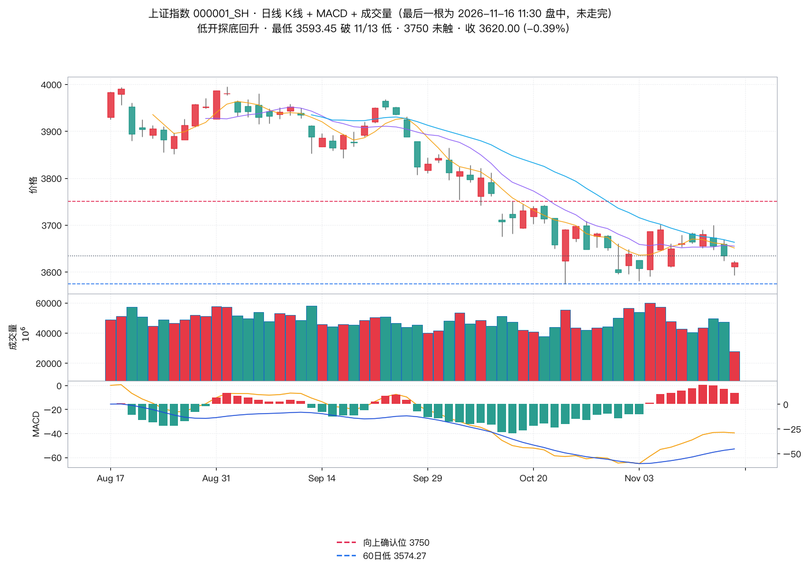
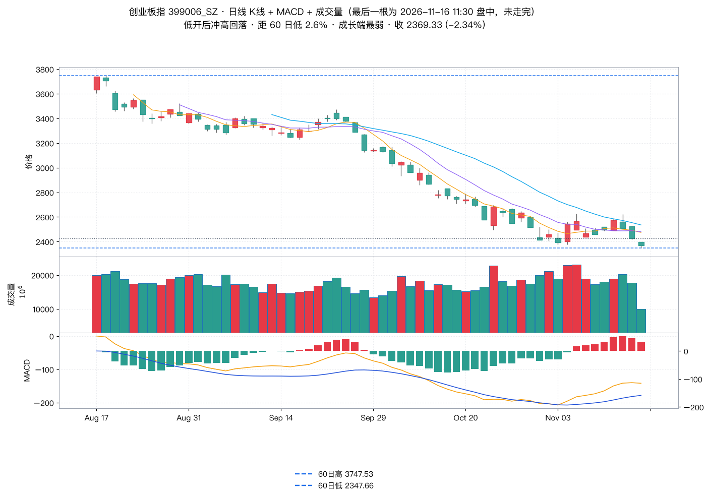
| 方向（自建篮子） | 老师口径 | 实测（均值 · 涨跌家数 · 个股） |
|---|---|---|
| 银行 | 红利防御 | +1.20%，5/0 全红；农行 +1.90%、建行 +1.49%、工行 +1.47% |
| 电力/高股息 | 红利防御 | +1.26%，5/5 全红；川投 +2.19%、长电 +1.24% |
| 煤炭/石油 | 红利防御 | +0.51%，4 涨 1 跌；神华 +1.22%、石化 +0.87% |
| AI视频/传媒 | 老师：上午略微强些 | -2.28%，仅 1/6；掌阅 +1.45%、华策 -0.59%，中文在线 -3.35%、上海电影 -5.61% |
| 半导体 | 老师：上午下跌比较厉害 | -3.23%，1/5；兆易 -5.58%、寒武纪 -4.98%、海光 -4.74%，仅北方华创 +1.23% |
| 算力/CPO | 老师：前期强势股补跌 | -6.71%，0/5；中际旭创 -7.70%、新易盛 -6.97%、工业富联 -6.71%、沪电 -5.64% |
| 人形机器人 | 老师：三个机器人股都没止跌 | -1.98%，1/8；模塑 -5.42%、长盈 -3.74%，仅拓普 +0.16% |
三条要记的：① 涨幅榜前列全是防御（开发区、公路桥梁、家电、金融、酿酒、食品、煤炭），银行 +1.20%、电力 +1.26% 全红 —— 老师「红利高股息方向走得好、与市场弱相关」成立；② 算力/CPO -6.71%、0 涨 5 跌，前期强势股全部补跌，中际旭创 -7.70%、工业富联 -6.71%，老师定性精准；③ 传媒只是「相对强」不是「绝对强」：均值 -2.28%，只是比算力少跌得多——老师自己那句「盘中走强不一定具有持续性」正好提醒。老师说传媒「调整的低点回到前面分析不该跌破的位置」：中文在线今日最低 25.56，与 11/09 低点 25.65 几乎重合（差 0.09 元），这一句可核验。
| 标的 / 题材 | 11:30 | 老师定性（老师口径） | 关键位 | 实测印证（日线触达） | 动作 |
|---|---|---|---|---|---|
| 药明康德 | 145.34 (-0.66%) | 无买点 · 等突破前高后回抽确认三买 | 157.8 | 最高 145.50，差 12.30 | 等 |
| 中国船舶 | 34.01 (-0.29%) | 无买点 · 走势没有止跌 | 11/13 低 33.80 | 最低 33.55，破前低 0.25 元 | 等 |
| 瑞芯微 | 213.94 (-1.77%) | 无买点 · 等回调到 208 或跌穿下沿拉回 | 208 | 最低 210.44，距 208 差 2.44 元，两条件均未触发 | 等 |
| 伊利股份 | 31.83 (+0.28%) | 无买点 · 上周五向上延续，不建议追涨 | 30.46 | 最高 31.98 续创 60 日新高，位置偏高 | 不追 |
| 中文在线 | 26.80 (-3.35%) | 无买点 · 等突破 30.38 出 15 分钟底分型三买 | 30.38 | 最高 27.84，差 2.54 | 等 |
| 海天瑞声 | 109.78 (-3.70%) | 无买点 · 有下影线，等日线有力度底分型 | — | 最低 105.61 破前低 6.63 元，收 109.78 | 等 |
| 奥普特 | 146.42 (-1.73%) | 无买点 · 有下影线，等日线有力度底分型 | 140 | 最低 141.00，距下沿 140 差 1.00 元 | 等 |
| 柯力传感 | 53.40 (-1.49%) | 无买点 · 有下影线，等日线有力度底分型 | 53 | 最低 51.10，已跌破 53 支撑 1.90 元 | 等 |
| 兆易创新 | 232.30 (-5.58%) | 无买点 · 创出新低，耐心等底背驰 | 237.28 | 最低 229.50，深跌破 7.78 元（老师：破得深一点更好） | 等 |
| 模塑科技 | 15.71 (-5.42%) | 无买点 · 创短期新低，等 14.95 出止跌信号 | 14.95 | 最低 15.12，距支撑仅 0.17 元 | 等 |
| 长盈精密 | 27.28 (-3.74%) | 无买点 · 走势没有止跌 | 32.08 | 最低 26.43，距三买门槛差 3.82 元 | 等 |
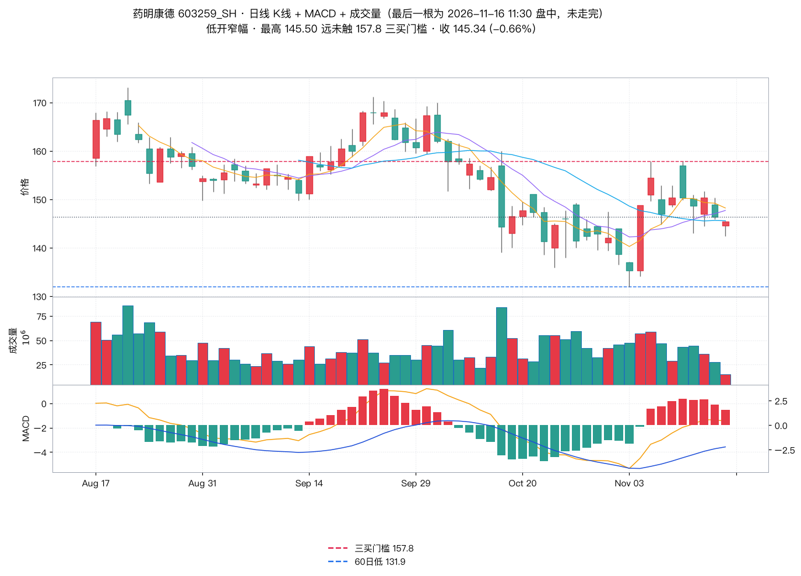
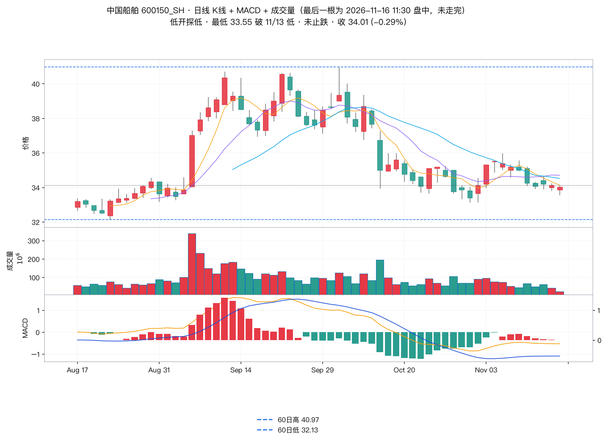
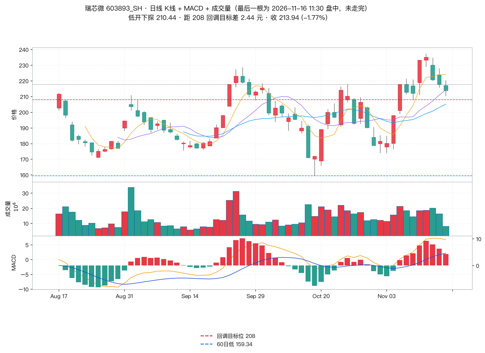
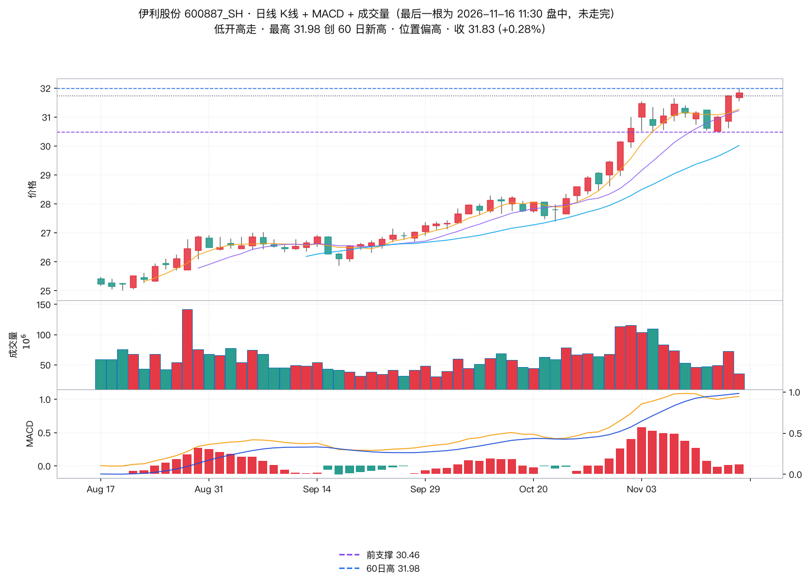
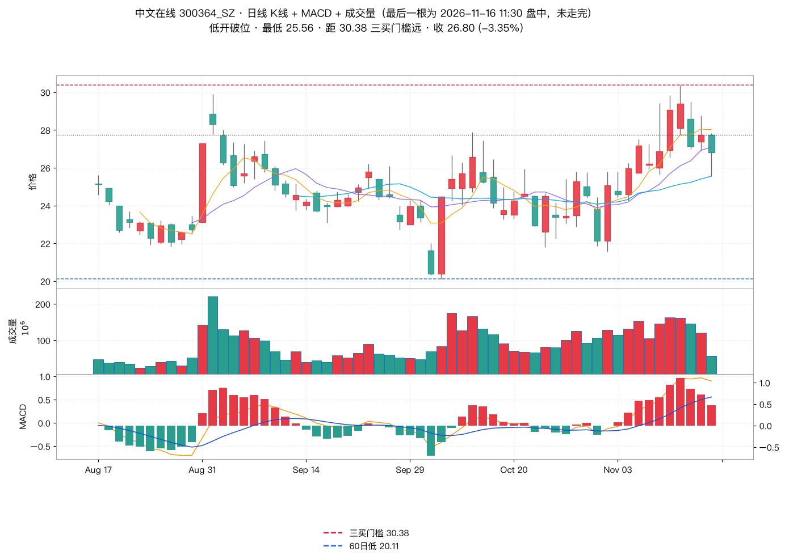
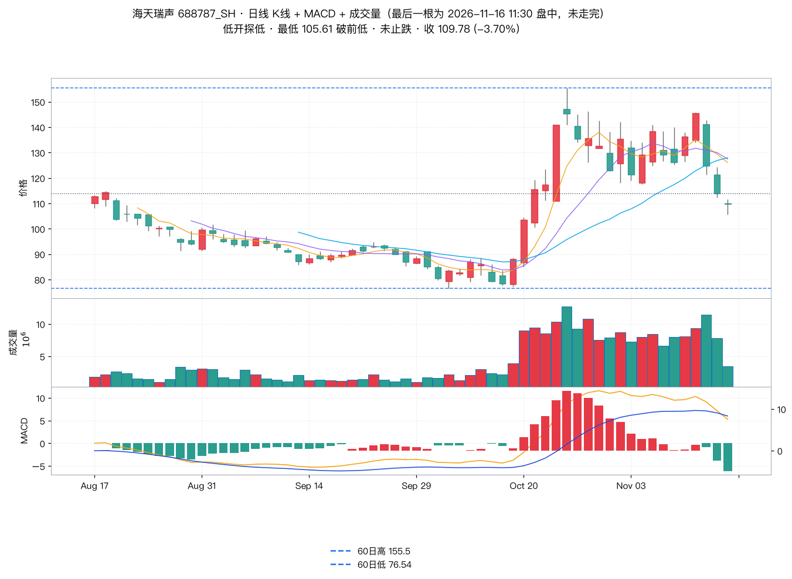
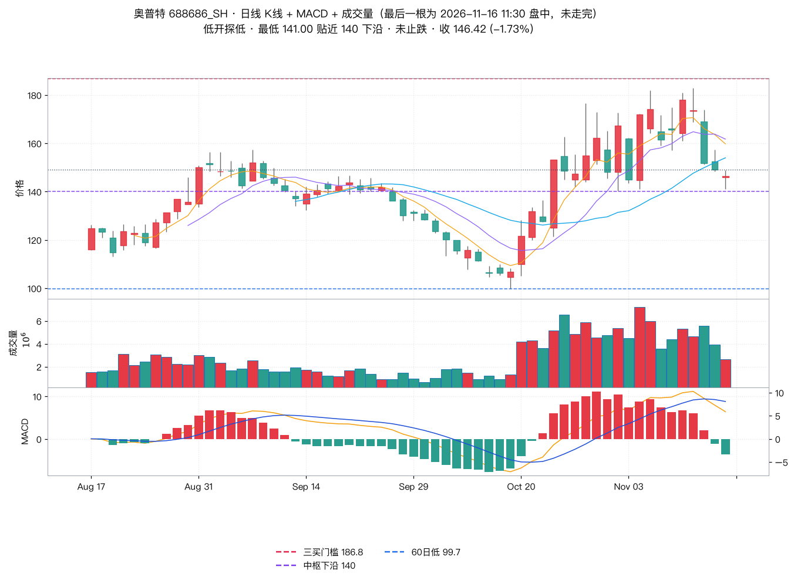
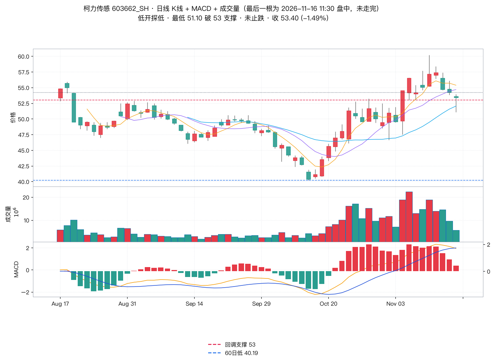
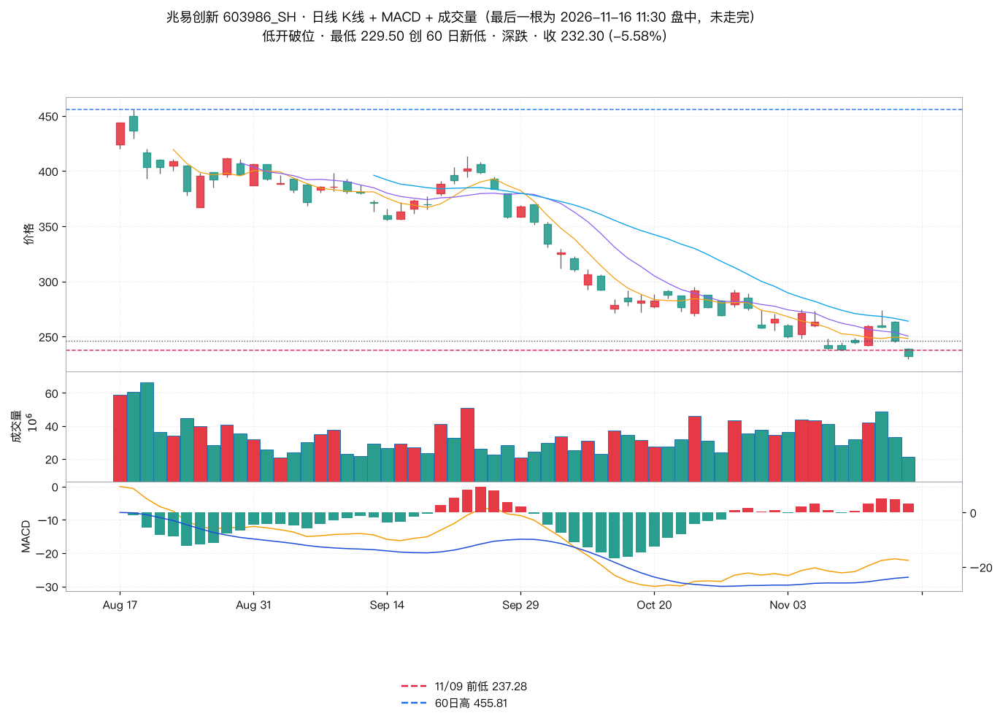
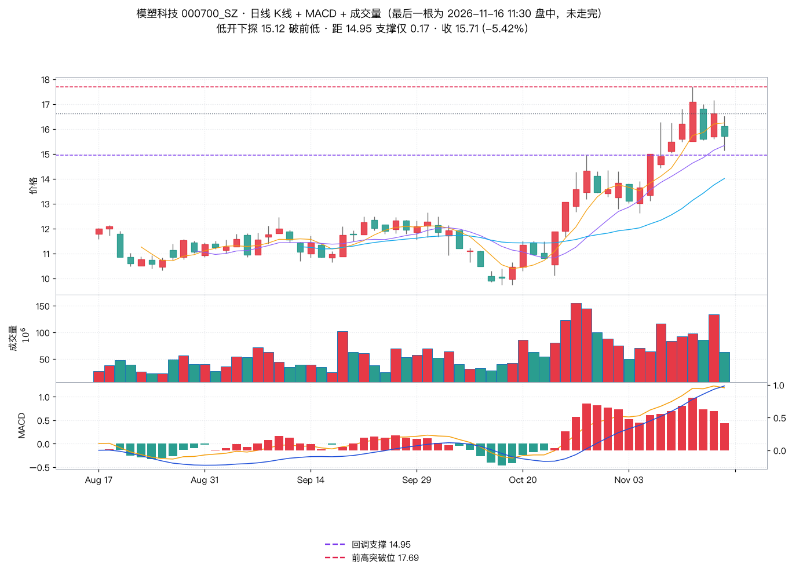
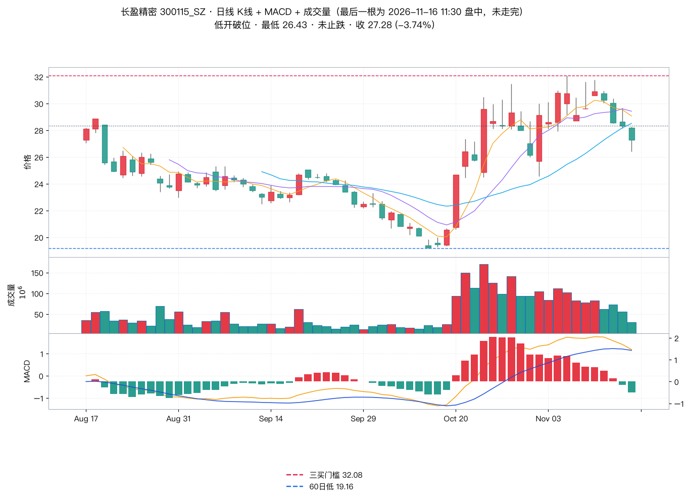
| 观察点 | 实测口径 | 存活情况（11/11 涨停池 → 11/16 11:30） |
|---|---|---|
| ① 防御品种里哪些持续性好 | 银行 / 电力 / 煤炭 15 只篮子 | 银行 +1.20%（5/0）、电力 +1.26%（5/0）、煤炭石油 +0.51%（4/1）—— 15 只里 14 只红盘，持续性目前最好；但老师提醒「一旦止跌，防御会面临回调」 |
| ② 上周四（11/11）强势股重新洗牌，谁能存活 | 11/11 涨停池 84 只 | 红盘仅 19/84（23%），跌超 5% 22 只； 机器人链 3/28（11%） vs 传媒链 4/8（50%） —— 机器人几乎全灭、传媒小半存活 |
存活名单（可当观察池，不是买点）：传媒链留存的 凯撒文化 +10.10%、 文投控股 +8.53%、果麦文化 +7.18% 全在游戏/出版；机器人链只剩 达 意 隆 +3.47%、 日发精机 +1.69%。 结论：老师要的两个答案，数字指向同一件事 —— 防御留住、机器人没留住，方向仍没选出来，所以只能轻仓、降低频率。
| 老师原文 | 实测 | 判定 |
|---|---|---|
| 老师：传媒/AI视频「看起来略微强些」 | 板块均值 -2.28%（1涨/6跌），中文在线 -3.35%、光线 -4.20%、上海电影 -5.61% | 相对强于算力，绝对仍跌 |
| 老师：算力硬件「出现补跌动作」 | 算力/CPO 均值 -6.71%，0/5，中际旭创 -7.70%、工业富联 -6.71% | 完全成立 |
| 老师：半导体与 CPO「下跌比较厉害」 | 半导体 -3.23%、CPO -6.71% | 完全成立 |
| 老师：涨幅榜靠前「除传媒外基本都带防御属性」 | 新浪行业涨幅前 12：开发区 +3.17%、公路桥梁 +1.67%、家电 +1.57%、物资外贸 +0.94%、金融 +0.66%、酿酒 +0.41%、食品 +0.38%、煤炭 +0.32% | 成立（全防御） |
| 老师：三个机器人股「都没出止跌，虽然有下影线」 | 海天瑞声低 105.61 收 109.78；奥普特低 141.00 收 146.42；柯力传感低 51.10 收 53.40 | 成立（三只都有下影线） |
来源：都业华《高级班》2026-11-16 午盘（高级班·午盘），执业编号 A0400626100004。仅供参考，不作为买卖依据，据此操作风险自担。投资有风险，入市需谨慎！
口径：同花顺公开接口日线（140 根，前复权）+ 11:30 实时快照（最后一根 K 线未走完、成交量为盘中累计）；板块为自建篮子均值（成分逐一列出）；涨跌家数取新浪全 A 5578 只 11:30 快照；涨停/跌停用东财池（不含 ST／北交所）；成交额同比取腾讯 5 日分时「同时点 11:30」累计，两市 = 沪市全市场 + 深市全市场。缠论定性按老师口径引用，不声称我方复算过 15 分钟结构。